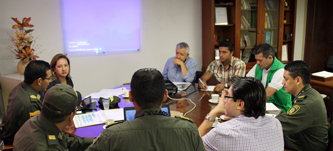
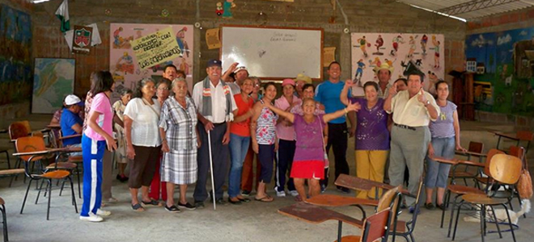
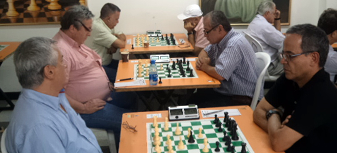

Bucaramanga, Febrero 14 de 2014
Más de 3.500 millones de pesos se invertirán en sistema de televisión para la seguridad de asistentes al estadio Alfonso López
Leer Más

Bucaramanga, Febrero 14 de 2014
Inder Santander apoyará con recreación Jornada Quirúrgica de Malformaciones Congénitas
Leer Más
Bucaramanga, Febrero 13 de 2014
30 mil millones de pesos están listos para ser invertidos en el estadio Alfonso López
Leer Más

Bucaramanga, Febrero 13 de 2014
Liga Santandereana de ajedrez definirá selección este próximo fin de semana
Leer Más
Next
Previous